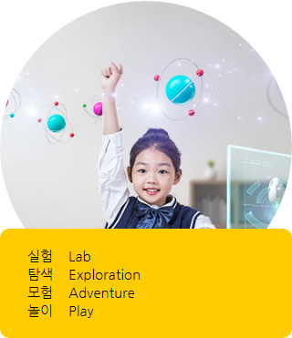
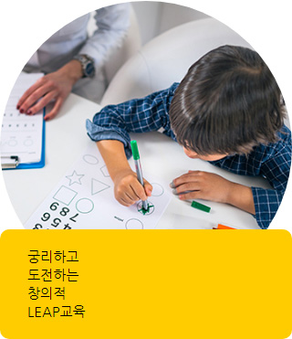
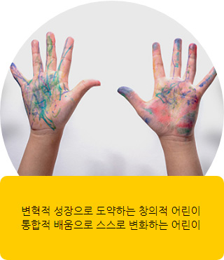

LCC GLOBAL EDUTOWN의 NEW GLOBAL 교육과정을 소개합니다.
"L.C.C 교육과정으로 재도약합니다"
-
 -
 -

LCC 유치원은 모든 아이들의 가능성을 믿습니다.
그 가능성을 발견하고 지지하는 것은 어른들의 책임입니다.
우리는 아이들이 가진 재능을 최대로 발휘할 수 있는 기본적인 힘을 기르기를 기대합니다.
아이들이 아무런 제약없이 마음껏 도전하고 함께 성장할 수 있도록 지지하는 울타리, LCC 유치원의 가치입니다.
“LCC GENIUS PROGRAM”
LCC 유치원의 특별함은 특별한 아이들로 증명됩니다.
세상에 민감한 아이를 기릅니다. 세상을 특별한 눈으로 바라보는 아이를 기릅니다.
통찰로 세상을 이해하고 자신만의 답을 찾는 아이를 기릅니다.
LCC 유치원은 다릅니다.
CPST
독특한 시각으로 문제를 찾아내고 설정하는 과정을 통해서 유아들의 영재성을 자극하고 발굴하는 체계적인 전략
MIT 가 지향하는 교실, LCC 유치원이 실천합니다- 질문이 넘쳐나는(질문과 질문이 꼬리를 무는) 교실
- 부족함으로 고민하고 궁리하도록 결핍을 선물하는 교실
- 문제에 부딪치고 해결하는 과정이 즐거운 교실
- 실패가 즐겁고 도전이 행복한 교실
Power Think
-
Think Different 다르게 사고하라
사물과 세상을
다르게 바라보는 새로운 관점
수평적 사고로 아이디어를 융합 -
Think Big 크게 사고하라
한계를 부수는 대담한 발상
도전을 두려워하지 않는 마음
통섭적이고 통찰적 사고 -
Think Creative 창의적으로 사고하라
확산적인 사고
독특하고 틀을 벗어난 사고 -
Think Image 이미지로 사고하라
생각을 이미지화
연상과 유추를 활성화하는 사고
비인지적 직관적 사고
LCC 유치원의 "성장 PLAN"
- 세상에 대한 민감함, 호기심, 관심, 질문 자극 특별한 시각을 가진 아이들
- 스스로 탐구하고 자신의 생각으로 세상을 이해 협력하고 생각을 공유하며 함께 성장하는 아이들
- 상상하고 시도하고 확인하는 참된 배움 실천 탐구와 통찰로 특별한 아이디어를 만드는 창의적인 아이들
탁월한 성장 Plan으로 운영됩니다.
아이들의 하나하나의 속도에 맞춘 여유롭고 개별화된 맞춤형 프로그램은
모든 아이들의 재능과 가능성을 극대화합니다.
이 모든 과정은 통찰적 사고의 형성을 목표로 하며 핵심으로 관통하는 정신은 포기하지 않고
실패와 도전을 즐기는 Entrepreneurship(기업가정신)입니다.